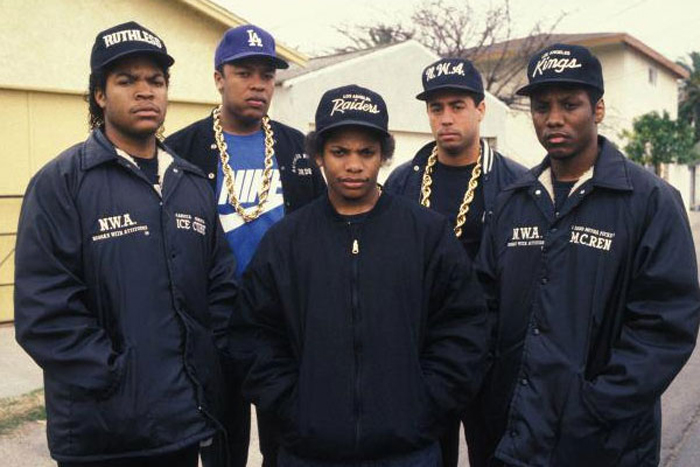

DR.DRE
PRIMEROS AÑOS
El primer hijo de Theodore y Verna Young, Dr. Dre nació bajo el nombre de Andre Romelle Young el 18 de febrero de 1965, cuando su madre y su padre tenían la edad de 16 y 17 años respectivamente. Verna se casó con Theodore en 1964. El nombre intermedio de Young, "Romelle," venía del grupo de R&B amateur de su padre, The Romells. En 1968, sus padres se divorcian, y su madre se casa con Curtis Crayon. Tuvieron tres hijos más en común, dos hijos llamados Jerome y Tyree (ambos fallecidos)12 y una hija, Shameka.3

En 1976 Young comenzó a interesarse por asistir al Vanguard Junior High School en Compton pero debido a la violencia entre bandas se trasladó al más seguro Roosevelt Junior High School.4 Verna posteriormente se casó con Warren Griffin, a quien conoció en un nuevo trabajo en Long Beach,5 lo que sumó tres nuevas hermanastras y un hermanastro a la familia. El hermanastro, Warren Griffin III, se convertiría más adelante en rapero bajo el nombre artístico Warren G.6

Young asistió al Centennial High School en Compton durante su adolescencia en 1979, pero se mudó al Fremont High School como consecuencia de sus malas notas. Young intentó entrar en un programa de aprendizaje en la Northrop Aviation Company, pero sus malas calificaciones en la escuela le hicieron no apto. Desde entonces, se centró en su vida social y en pasarlo bien.7 Young tuvo un hijo, Curtis, nacido el 15 de diciembre de 1981 con Lisa Johnson. Curtis Young fue criado por su madre y no conoció a su padre hasta que Curtis se había convertido en rapero alrededor de 20 años más tarde
